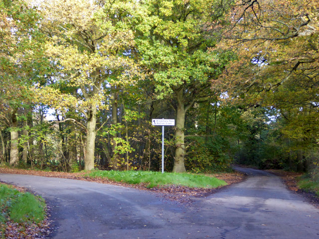
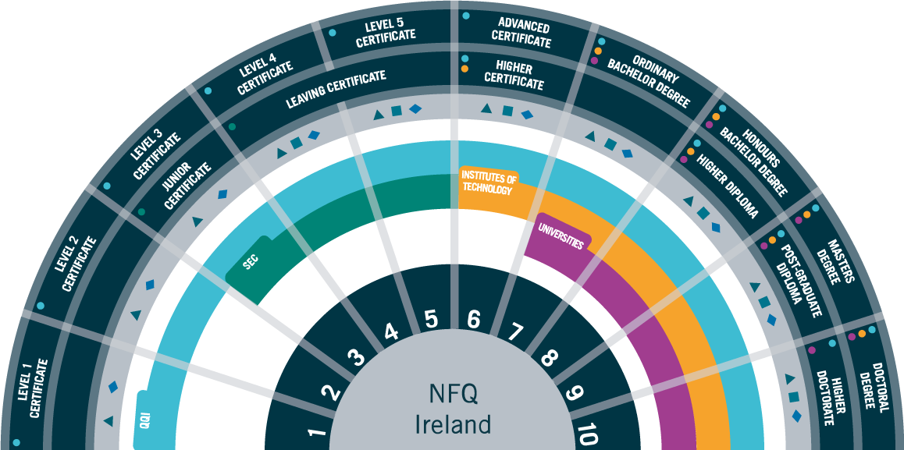

Working in Cork
If you are a student studying master or postgraduate diploma courses, then your visa allows you to work under some conditions. You will be allowed to work part-time(maximum 20 hours a week) during your semester and full-time (maximum 40 hours a week) on holidays. You should also keep in mind that a master's degree and diploma courses last one year, and they can be pretty intense. So if you are having difficulty keeping up with your study then should think twice about working while studying.
After your graduation, Ireland gives you some time to work and gain experience. When your degree or diploma completes, you have two options:
- Go back to your Home Country
- Stay in Ireland and look for work and gains some Irish work experience
If you are doing an NQF-8 degree or diploma then you will have one year to look for work after study. If you have an NQF-9 degree or diploma then you will have two years to look for work.
After the post-study work period, you still have two options:
- Go back to your home country
- Extend your work visa and stay a little more